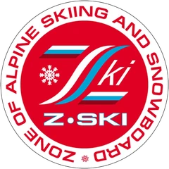

Поехали вниз — первая остановка через пару секунд
Яхрома, рядом с СНТ Каменка. Куда дальше?
Экипировка лыжника — по авторскому изображению

Пять остановок по пути — выберите, куда свернуть. Со звуком ветра.